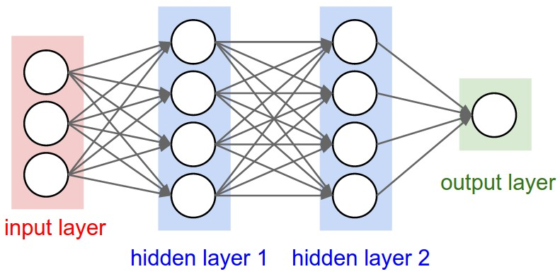

Learning Objectives
- Describe a feedforward neural network in terms of layers, neurons, weights, biases, and activations.
- Write the forward pass equations for a multi-layer network in both scalar and matrix form.
- Compare common activation functions: sigmoid, tanh, and ReLU, and explain why ReLU is preferred.
- State the Universal Approximation Theorem and understand its significance and limitations.
- Implement the forward pass of a shallow (1 hidden layer) neural network in MATLAB.
Notation used in this lesson
Subscript convention: Subscript \(\ell\) denotes the layer index (e.g. \(\mathbf{W}_1\) is the first layer's weight matrix, \(\mathbf{W}_2\) the second, etc.). This avoids superscript clutter when equations also involve powers or transposes.
Background & Motivation
The limitation of linear models
The linear classifier from Lesson 34 is powerful but fundamentally limited: it can only learn linear decision boundaries. Real data is rarely linearly separable. Satellite orbit families, material phases, particle signatures — these require curved, complex boundaries.
A naive fix might be to simply stack multiple linear layers. But this does not help: the composition of linear transformations is itself a linear transformation. No matter how many layers you add, the model collapses to a single matrix multiply — equivalent to one linear layer with different weights. Stacking linear layers buys you nothing.
Neural networks exploit this by stacking many such layers. The composition of these layers can represent arbitrarily complex functions — a result formalized by the Universal Approximation Theorem.
Biological inspiration (and where it ends)
Artificial neurons are loosely inspired by biological neurons: they receive inputs, compute a weighted sum, and fire (activate) if the sum exceeds a threshold. However, modern neural networks are best thought of as parameterized function approximators, not brain simulations. The biological analogy is more historical than mechanistic.
Key Concepts
1. Network Architecture
A feedforward neural network (also called a multi-layer perceptron, MLP) consists of:
- Input layer: receives the feature vector \(\mathbf{x} \in \mathbb{R}^d\). No computation here.
- Hidden layers: one or more layers where learning happens. Each neuron receives all outputs from the previous layer.
- Output layer: produces the prediction \(\hat{\mathbf{y}}\). For regression: linear output. For classification: sigmoid (binary) or softmax (multi-class).
We describe the architecture by listing the number of neurons per layer. Example: a network with input \(d=10\), one hidden layer of 64 neurons, and output of 1 is written as [10 → 64 → 1].



Every neuron in one layer connects to every neuron in the next (“fully connected”). CS231n counts layers by the number of weight matrices, so these are called 2-layer and 3-layer networks respectively (the input layer is not counted). (Source: CS231n Lecture 4.)
2. The Forward Pass (Single Layer)
For layer \(\ell\), the computation is:
Here, \(\mathbf{a}_{\ell-1}\) is the activation output from the previous layer (for the first hidden layer, \(\mathbf{a}_0 = \mathbf{x}\)), \(\mathbf{W}_\ell \in \mathbb{R}^{n_\ell \times n_{\ell-1}}\) is the weight matrix, \(\mathbf{b}_\ell \in \mathbb{R}^{n_\ell}\) is the bias vector, and \(\phi\) is the nonlinear activation function applied element-wise.
3. Full Forward Pass (Two-Layer Network)
A network with one hidden layer and a binary classification output:
The network applies a learned nonlinear transformation from \(\mathbf{x}\) to \(\hat{y}\) in three matrix operations. The power comes from learning \(\mathbf{W}_1, \mathbf{b}_1, \mathbf{W}_2, b_2\) jointly.
4. Activation Functions
Many different nonlinear functions can serve as \(\phi\). The choice affects training stability, gradient flow, and model performance. Some of the most commonly used activation functions are shown below, ordered by prevalence in modern practice.
| Function | Formula | Range | Common Use |
|---|---|---|---|
| ReLU | \(\max(0, z)\) | \([0,\infty)\) | Hidden layers (modern default) |
| Sigmoid | \(\sigma(z) = \frac{1}{1+e^{-z}}\) | \((0,1)\) | Binary output layer |
| Softmax | \(\frac{e^{z_k}}{\sum_j e^{z_j}}\) | \((0,1)\), sums to 1 | Multi-class output layer |
| Tanh | \(\tanh(z) = \frac{e^z - e^{-z}}{e^z + e^{-z}}\) | \((-1,1)\) | Hidden layers (older architectures) |


Figure 3: Common activation functions. Sigmoid and tanh saturate (flat slope) for large |z|, causing vanishing gradients. ReLU has slope exactly 1 for z > 0, making it the modern default for hidden layers. (Source: CS231n.)
5. Parameter Count
Every weight matrix and bias vector in the network contains learnable parameters — values adjusted during training. For each layer \(\ell\), the weight matrix \(\mathbf{W}_\ell \in \mathbb{R}^{n_\ell \times n_{\ell-1}}\) contributes \(n_\ell \cdot n_{\ell-1}\) parameters, and the bias vector \(\mathbf{b}_\ell \in \mathbb{R}^{n_\ell}\) contributes \(n_\ell\) more. For a three-layer network \(d \to n_1 \to n_2 \to n_\text{out}\), the total is:
Understanding the parameter count helps you reason about model capacity and overfitting risk — more parameters means more expressive power, but also a greater demand for training data. To put this in perspective, some well-known models:
| Model | Year | Parameters | Task |
|---|---|---|---|
| LeNet-5 | 1998 | ~60 K | Handwritten digit recognition |
| AlexNet | 2012 | ~61 M | ImageNet classification |
| ResNet-50 | 2015 | ~25 M | ImageNet classification |
| GPT-2 | 2019 | ~1.5 B | Text generation |
| GPT-3 | 2020 | ~175 B | General language tasks |
| GPT-4 (est.) | 2023 | ~1.8 T | General language & reasoning |
| GPT-5 (est.) | 2025 | >10 T | General language, reasoning & agents |
6. Universal Approximation Theorem
A feedforward network with one hidden layer and a nonlinear activation can approximate any continuous function on a compact domain to arbitrary accuracy, given enough neurons. This is a theoretical existence result — it does not say learning is easy, only that the capacity is there.
Recommended Videos
CS231n Lecture 4 covers neural network forward passes, activation functions, and the biological motivation:
The 3Blue1Brown series gives the best visual intuition for what the network is doing:
Worked Example — MATLAB Forward Pass with patternnet
We use MATLAB's patternnet (Deep Learning Toolbox) to build a shallow network, run a forward pass before and after training, and classify all samples. This example uses a synthetic spectral dataset — not sat_data.mat, which you will work with in HW 35.
%% Lesson 35 — Neural Network Forward Pass with patternnet
% Domain: synthetic spectral classification (3 features, 2 classes)
% HW 35 uses sat_data.mat — this example uses a different dataset.
rng(356);
d = 3; K = 2; N_per = 60; N = 2 * N_per;
%% --- Generate synthetic spectral data ---
% Two emission source types measured at three spectral bands
X = [randn(N_per, d)*0.5 + [0.2 0.8 0.3]; % Class 1
randn(N_per, d)*0.5 + [0.8 0.2 0.7]]'; % Class 2
% X is d × N (patternnet expects each column = one sample)
labels = [ones(1, N_per), 2*ones(1, N_per)]; % 1 × N
% Convert integer labels to one-hot encoding (K × N)
T = full(ind2vec(labels)); % e.g. label 1 → [1;0], label 2 → [0;1]
fprintf('Dataset: %d samples, %d features, %d classes\n', N, d, K);
%% --- 1. Define network: 3 → 10 → 2 ---
net = patternnet(10); % one hidden layer, 10 neurons
net = configure(net, X, T); % set input/output sizes (random weights assigned)
view(net); % opens network architecture diagram
%% --- 2. Forward pass BEFORE training (random initial weights) ---
x1 = X(:, 1); % d × 1 column (first sample)
p1 = net(x1); % K × 1 softmax probabilities
fprintf('\n--- Forward Pass (BEFORE training) ---\n');
fprintf('Input: [%.3f %.3f %.3f]\n', x1);
fprintf('Output: [%.4f %.4f]\n', p1);
fprintf('Predicted: Class %d | True: Class %d\n', vec2ind(p1), labels(1));
fprintf('(Random weights — prediction is not yet meaningful)\n');
%% --- 3. Train the network ---
net = train(net, X, T);
%% --- 4. Forward pass AFTER training ---
p1_trained = net(x1);
fprintf('\n--- Forward Pass (AFTER training) ---\n');
fprintf('Output: [%.4f %.4f]\n', p1_trained);
fprintf('Predicted: Class %d | True: Class %d\n', ...
vec2ind(p1_trained), labels(1));
%% --- Classify all samples and compute accuracy ---
P_all = net(X); % K × N output probabilities
pred = vec2ind(P_all); % 1 × N predicted class labels
acc = mean(pred == labels) * 100;
fprintf('\nOverall accuracy: %.1f%%\n', acc);
patternnet? For small datasets (hundreds of samples, few features), patternnet uses a second-order optimizer (scaled conjugate gradient) that processes all data each iteration. This converges far faster and more reliably than mini-batch SGD, which was designed for large-scale deep learning.
Summary
| Concept | Key Idea |
|---|---|
| Layer computation | \(\mathbf{z}_\ell = \mathbf{W}_\ell\mathbf{a}_{\ell-1}+\mathbf{b}_\ell\), \(\mathbf{a}_\ell=\phi(\mathbf{z}_\ell)\) |
| ReLU | \(\max(0,z)\) — default hidden layer activation; avoids vanishing gradients |
| Parameters | Each layer \(\ell\) has \(n_\ell \times n_{\ell-1}\) weights + \(n_\ell\) biases |
| Forward pass | Chain of matrix-vector products + pointwise nonlinearities |
| Universal approximation | One hidden layer + nonlinearity can approximate any continuous function |
References
- Karpathy, A. et al. (2017). CS231n: Convolutional Neural Networks for Visual Recognition — Neural Networks Part 1 notes. Stanford University. http://cs231n.github.io/neural-networks-1/
- Goodfellow, I., Bengio, Y., & Courville, A. (2016). Deep Learning, Chs. 6–7. MIT Press.
- 3Blue1Brown. (2017). But what is a neural network? [Video]. YouTube.
- Cybenko, G. (1989). Approximation by superpositions of a sigmoidal function. Mathematics of Control, Signals and Systems, 2(4), 303–314.
- He, K. et al. (2015). Delving deep into rectifiers: Surpassing human-level performance on ImageNet. ICCV 2015.